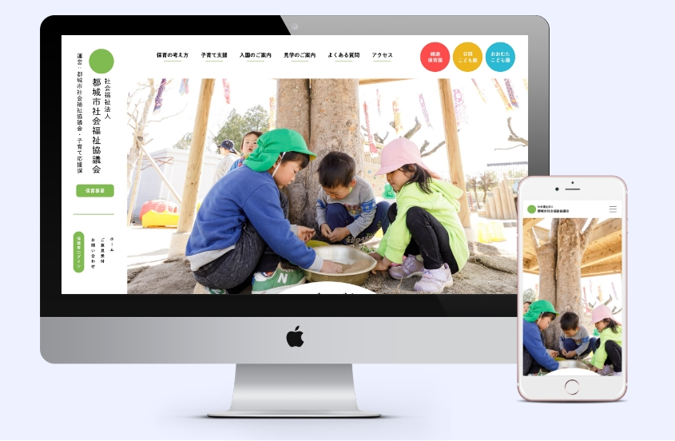

Web
design / cording
【課題制作】
宮崎県都城市の認定保育園の紹介ウェブサイト

- 概要
- 提供された画像と共有されたガイドラインを基にトップページのデザインおよびコーディングでの実装を行う講義課題として最初期に制作。
- デザインコンセプト
- 白を基調とし、目にも優しいクリーム色をメインカラーとして採用した。また、ボタンを丸く作り、角丸を適宜使用することで、最も与えたかった柔らかい印象を強調するデザインを意識した。
- 工夫点
- リンクが多いサイトであり、各保育園への導線も兼ねていたので、保育園へのリンクボタンはそれぞれにアクセントカラーを与えることで独立して目立つようにした。縦書きと横書きを織り交ぜることで、メニューとコンテンツが別の要素として認識されるようデザインを行った。
- 担当範囲
- デザイン / コーディング
- レスポンシブ
- スマートフォン / iPad / PC
- 制作期間
- 2週間
- 使用ツール
- Photoshop / Illustrator / Xd / Vscode
- Git Hub
-
https://github.com/yuuri-u/nursery.git
https://yuuri-u.github.io/nursery/